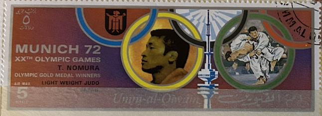
| SOURCE | TITLE| IMAGE MATCH | click to source page |
| Wikipedia | Toyokazu Nomura - Wikipedia | 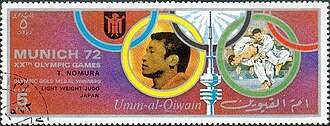 |
| Wikimedia.org | File:1972 stamp of Ajman Vasily Alekseyev.jpg - Wikimedia Commons |  |
| Alamy | Shinobu hi-res stock photography and images - Alamy | 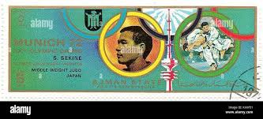 |
| Alamy | Olympic games of munich 1972 hi-res stock photography and images - Page 9 - Alamy | 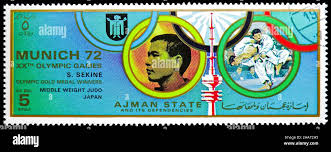 |
| Alamy | Japanese stamp stamp collection hi-res stock photography and images - Alamy | 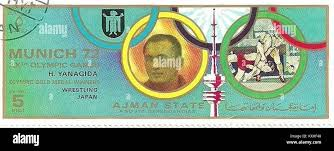 |
| Alamy | Weightlifting alekseyev hi-res stock photography and images - Alamy | 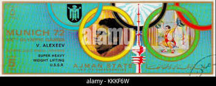 |
| alamy.it | Questo francobollo 1972 di Ajman presenta Daniel Morelon, un rinomato ciclista francese e campione olimpico. Il francobollo onora i suoi successi nel ciclismo su pista, in particolare le sue vittorie nella medaglia | 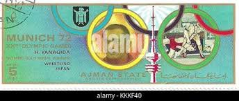 |
| Alamy | Dieter kottysch hi-res stock photography and images - Alamy | 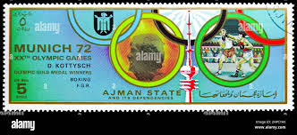 |
| eBay | 77621] Yemen YAR 1968 Olympic Games Mexico Imperf. Sheet MNH | eBay | 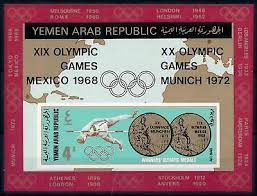 |
| eBay | FUJEIRAH 1972 OLYMPICS, 13 different XF MNH/** Medal Winners Souvenir Sheets,UAE | eBay | 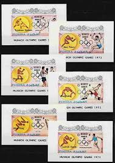 |
| eBay | XF/S (Extremely Fine/Superb) Emirati Stamps for sale | eBay | 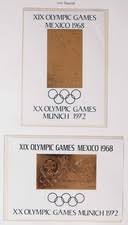 |
| JandR Stamps | Martial Arts on stamps | JandR Stamps | 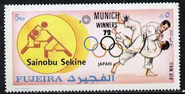 |
| esam.ir | شیت تمبر ارزشمند یادبود المپیک 1972 رشته جودو | 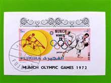 |
| Wikipedia | Equestrian at the 1972 Summer Olympics – Individual jumping - Wikipedia | 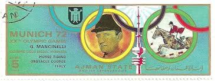 |
| torob.com | خرید و قیمت شیت تمبر ارزشمند یادبود المپیک 1972 رشته جودو | ترب | 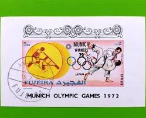 |
| Coin ID Scanner | 500 Tögrög Tuvshinbayar 2008 Silver (.925) Coin Value and Price Guide - | Coin ID Scanner | 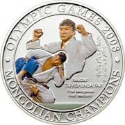 |
| eBay | 中国裸体en vente | eBay | 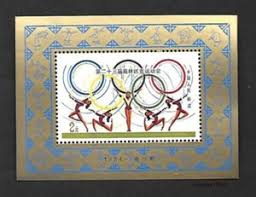 |
| eBay | FUJEIRA Olympic Games 1972 Munich complete set of 25 Imperforated blocks MNH | eBay |  |
| eBay | FUJEIRA 1972 MUNICH 72' WINNERSMINT VF NH O.G S/S CTO (F5) | eBay |  |
| eBay | Tokyo 1964 Event Olympics Tickets for sale | eBay | 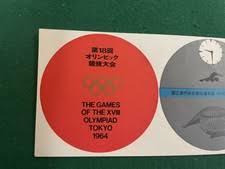 |
| Alamy | 1972 olympics hi-res stock photography and images - Alamy |  |
| eBay UK | Olympics Sheet Mongolian Stamps for sale | eBay UK | 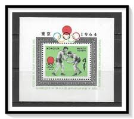 |
| eBay | Mongolia - 1995 MNH set of 2 s/s 1996 Atlantic Olympics 2246a-b cv 6.50 Lot # 70 | eBay | 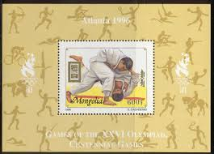 |
| eBay | Las mejores ofertas en Pósters de Juegos Olímpicos de Tokio 1964 Caso | eBay | 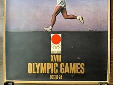 |
| Leski Auctions | Stamps, Postal History & Picture Postcards | 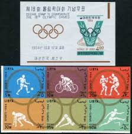 |
| eBay | First day cover, Scott #C112a, Olympics, Fleetwood cachet, 1983 | eBay | 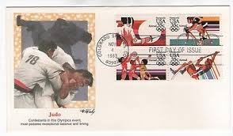 |
| pixelsmerch.com | Olympic Digital Art for Sale - Pixels Merch | 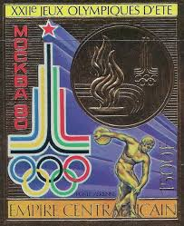 |
| eBay | Olympics Used Japanese Stamps for sale | eBay | 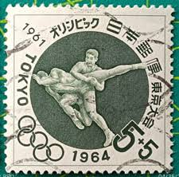 |
| eBay | Olympics Afghan Stamps for sale | eBay | 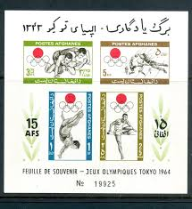 |
| eBay | Olympics Bahraini Stamps (1971-Now) for sale | eBay | 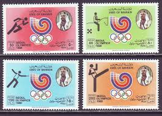 |
| Alamy | NORTH KOREA - CIRCA 1998: A stamp printed in North Korea from the "Monuments in Pyongyang" issue shows Arch of Triumph, circa 1998 Stock Photo - Alamy | 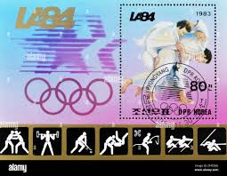 |
| eBay | Yemen 1968 - Block Olympic Games used imperforated | eBay | 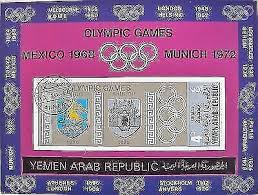 |
| Issuu | Alumni News Spring/Summer 2024 by Morgan State University - Issuu | 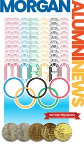 |
| eBay | D78441 Belgium FDC P.713 Olympics Los Angeles 1984 Wetteren | eBay | 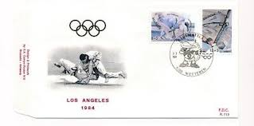 |
| eBay | Olympics Used French Stamps for sale | eBay | 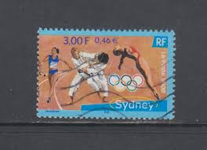 |
| lbdphilately.com | Products | 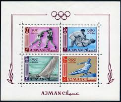 |
| eBay | US FDC #C109-C112 Fleetwood 1983 Colorado Springs CO Summer Sports Olympics HC | eBay | 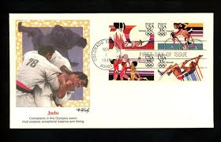 |
| eBay | SHARJAH KHOR FAKKAN 1968 OLYMPICS, Cpl XF Perf+ImPerf MNH**, Sports Athletics | eBay | 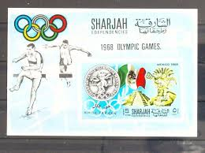 |
| Arpin Philately | Buy Yemen #251-251E - Winners' Olympic Medals (1968) | Arpin Philately | 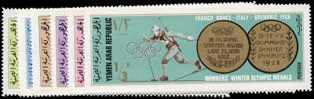 |
| Max Stern & Co | Australia 2020 Olympic Sports Athletics Stamp & $5 Coin PNC | 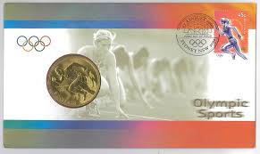 |
| Free stamp catalogue | Stamps with the theme Olympic Games - Freestampcatalogue.com - The free online stampcatalogue with over 500.000 stamps listed. | 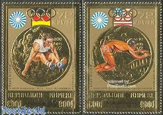 |
| Lothar Nest | Judo-Museum - Wolfgang Hofmann | 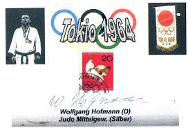 |
| Etsy | 180 Old Vintage STAMPS YEMEN Arab REPUBLIC Olympics, Winston Churchill Etc.. - Etsy | 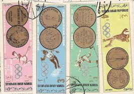 |
| rowing-memorabilia.de | Olympic Regattas - 1984 Los Angeles | 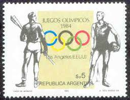 |
| eBay | SHARJAH KHOR FAKKAN 1969 EB 219-26 Olympia Olympics 1968 Medal Winner MNH | eBay | 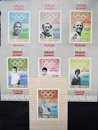 |
| eBay | Fujeira 1972 ** Mi.1531 A Olympische Spiele Olympic Games "Gold Medal Winners" | eBay | 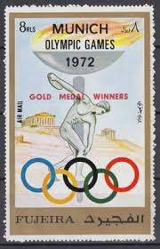 |
| eBay | Korean Boxing Olympics Postal Stamps for sale | eBay | 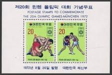 |
| mbeatpercussion.com | Topical Four Volume Of 1972 Munich Olympics Stamp Catalogs ~1000 Stamps Pahlavi Shah Era Iran | 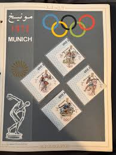 |
| eBay | Olympics Multi-Color Macedonian Stamps for sale | eBay | 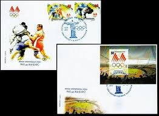 |
| 32 Olympic Games ideas | olympic games, olympics, olympic logo | 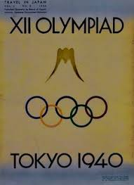 | |
| Alamy | United arab emirates postage stamp hi-res stock photography and images - Alamy | 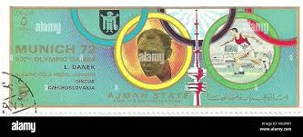 |
| eBay | Fujeira 1972 ** Mi. UNLISTED IMPERF. Gold foil, Olympische Spiele Olympic Games | eBay | 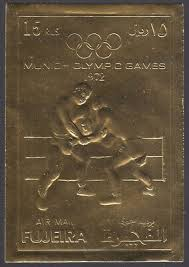 |
| Sydney Philatelics, Australia | PNC, Medallion Covers 1994-2015 Stamps - Sydney Philatelics Australia | 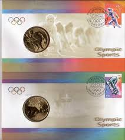 |
| eBay | US FDC # 1791-1794 15c Olympics W L.Cancel 1979, 9Q242 | eBay | |
| eBay | Six Progressive Boxing Color Proofs 1972 Munich Olymipic Winners of Fujairah UAE | eBay | |
| Shutterstock | Munich Stamp: Over 1,861 Royalty-Free Licensable Stock Photos | Shutterstock | |
| eBay | Korea Olympic Games 1968 Mexico 4 Imperforated blocks MNH | eBay | |
| Dreamstime.com | 2,298 Jump Olympics Stock Photos - Free & Royalty-Free Stock Photos from Dreamstime - Page 5 | |
| Dreamstime.com | Judo Jeux Olympiques D'été 1996 Atlanta Image stock éditorial - Image du vers, antiquité: 292547044 |